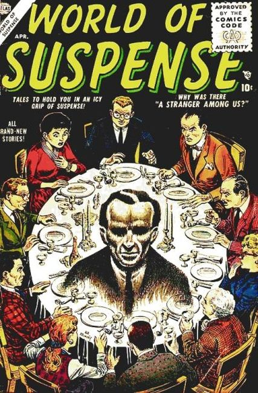

Series: 8 issues 1956
Publisher: Atlas
Issue #1 Cover art by Joe Maneely
- A Stranger Among Us, art by Bill Everett. Two men in a lab are told a story by a man behind a glass window about visiting a world of giants.
- The Two-Faced Man, art by Joe Maneely. A stagehand of the play Cyrano De Bergerac is in love with the leading lady so he resolves to knock out the leading man and don his makeup so he can get close enough to her to confess his feelings.
- Bright New World!, art by Al Hartley.
- The Alchemist's Apprentice, art by Syd Shores.
- The Art Expert text story.
- What Happened In The Cave?, art by Mort Drucker.
- The Mechanical Man!, art by Chuck Miller.